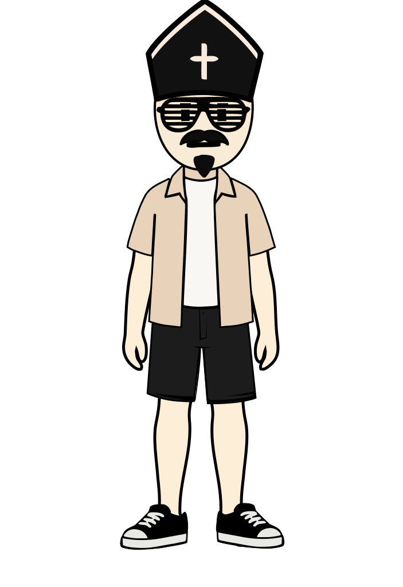
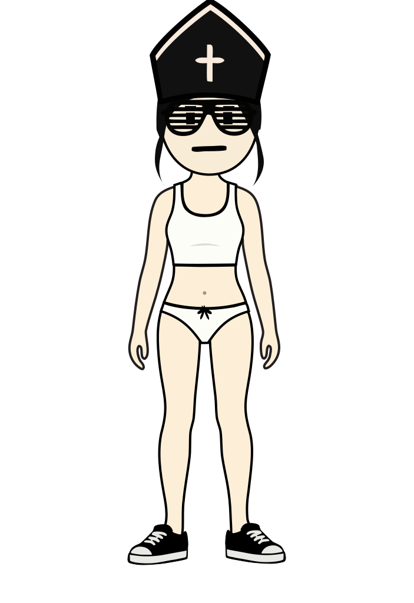

01 · PERSON
СОБЕРИ ПЕРСОНАЖА.
Пока только оболочка. Поведение соберём дальше простыми решениями.

02 · SITUATION
ТРЕТЬЕ ОБЪЯСНЕНИЕ.
«Я УЖЕ ПОНЯЛ»
Марта сказала это второй раз. Но у тебя есть ещё один нюанс, без которого всё, конечно, развалится.
Сначала реши, как твой персонаж устроен. Сам граф увидишь только после.
03 · ВОПРОС 1/4
ЧТО ТЕБЯ ЗДЕСЬ ЦЕПЛЯЕТ?
04 · ВОПРОС 2/4
ЧЕГО ТЫ ХОЧЕШЬ?
Не что сделать. Какого результата добиться?
05 · ВОПРОС 3/4
ЧТО ТЫ ДЕЛАЕШЬ?
06 · ВОПРОС 4/4
А ЕСЛИ НЕ СРАБОТАЛО?
07 · BRAIN REVEAL
ВОТ ТВОЙ МОЗГ.
Четыре человеческих ответа стали исполняемой причинной цепочкой.
СЕЙЧАС Я ВСЁ ОБЪЯСНЮ.
Под капотом это настоящий graph + runtime. Intent и saliency остаются скрыты.
08 · OPPONENT
А ТЕПЕРЬ — ДРУГОЙ МОЗГ.

МАРТА
ОНА УЖЕ ПОНЯЛА.
Её graph тоже исполняется. После каждого World Event меняется состояние, и следующий ход получает новый Trigger.
09 · TALK · REAL RUNTIME
10 · RESULT
11 · ONE CHANGE
ОДНА ПРИЧИНА.
Сценарий, Марта и начальные состояния останутся теми же. Меняем один элемент твоего graph.
12 · REPLAY
ТО ЖЕ САМОЕ. ОДНА ПРАВКА.
13 · BEFORE / AFTER
ПРИЧИНА СДВИНУЛАСЬ. СЛЕДСТВИЕ — ТОЖЕ.
ДО
ПОСЛЕ
Диалог не выбирался вручную. Оба прогона прошли через один и тот же deterministic runtime; во втором изменён ровно один элемент player graph.